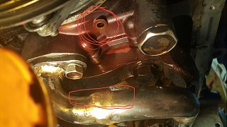

-
So looking to inspect my main bearings due to oil starvation and was wondering if its possible to do it without and engine stand. I Just need to take the bearings off to get a quick look then pop them back in if they look okay.
Question i have is when popping them back in is it going to be a pain getting them back with the crank facing down and with the engine on a hoist? Ive never messed with main bearings so im just wondering if theirs a lot of alignment you need to do to install them or if you simply set them on and torque the bearings cap.
Thanks ahead of time. -
While it's not necessary, removing and retorquing the girdle is going to be a effort in unpleasantness while the whole assembly is swinging from a hoist.
And if your bearings are toasty, you are going to want a stand for the rebuild.
You can usually find them pretty cheap on craigslist. People use them once then pass them on.
I've got 4 and a hoist, all off of craigslist.
84 AE/Shiro #683/Shiro #820/84 Turbo -
Okay got it thanks i guess ill just take them off on the hoist and if their bad ill be buying a engine stand. If the bearing are damaged from oil starvation it would be clear as day correct?
My last question is and this may sound dumb but is their anyway to get away with just replacing the bearings without machine work? I don't ask because Im lazy its just a matter of i have limited time and funds due to me having to relocate due to my work. Which is why i really hope that the say 6 times starting the engine for 10 seconds each with out oil pressure didn't toast my engine.
Just guessing cost if bearings are gone for machine work and parts would be 100-200? Called some shop and having crank turned was around 100$
-
Yeah, that's gonna all depend on what you find. Scoring on the crank will mean you're gonna need either a replacement or have it machined and use oversized bearings.
If i had to take a guess, i bet they're (the bearings) fine. However if it's a high mileage motor, replacing the bearings isn't gonna necessarily be a bad thing.
84 AE/Shiro #683/Shiro #820/84 Turbo -
So i pulled the pan off and i think its toast… If im correct i shouldn't be able to wiggle the bottom of the rods at all right? Because I can wiggle a few rods just a hair and when i pulled the pan their was some kinda of metal shaving or calcium looking stuff something siting on the pickup tube and i think it come from a little hole in the oil pump like shown circled in the picture.
I guess now its a question of is the top end of the engine toast to and i need to hurry and put it back together to move it due to moving and im worried doing so will further ruin the engine.
I have never seen a build so cursed in my life… -
If you think about it, the rods have to have a little side clearance or they wouldn't be able to spin. They are probably fine. If the bearings are toast you would find LOTS of metallic specks in the bottom of the pan and in the oil. You still need to pull one of the main caps to see if the bearings are scored. Do you have a picture of the gunk you found on the pickup tube? Would help us id it.Butter (credit where credit is due): "You have this "gift" where you can make cooking a Hot Pocket seem like you need a certain wavelength microwave and involve brown mustard." -
pull the rod caps since it will be way easier. just follow the fsm. if oil never got into the system then metal may not show in the oil, it simply is scored to the crank and bearing.Hmmm, Whats next?
Full Size Bronco, smashing shit.
84ZXT

Copyright © 2006–. All rights reserved. Privacy Policy